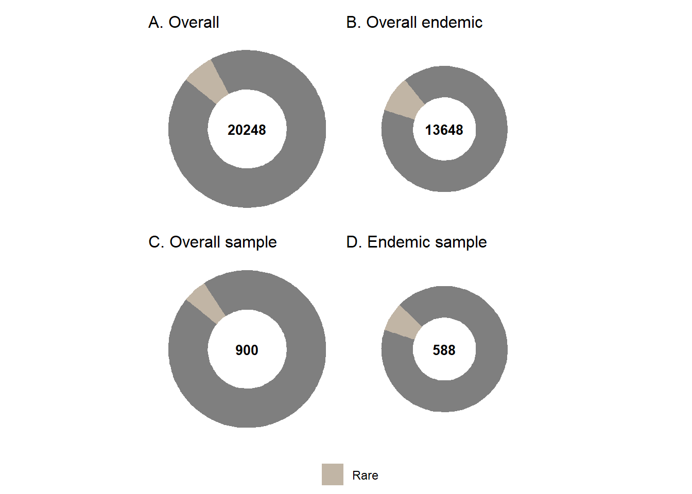
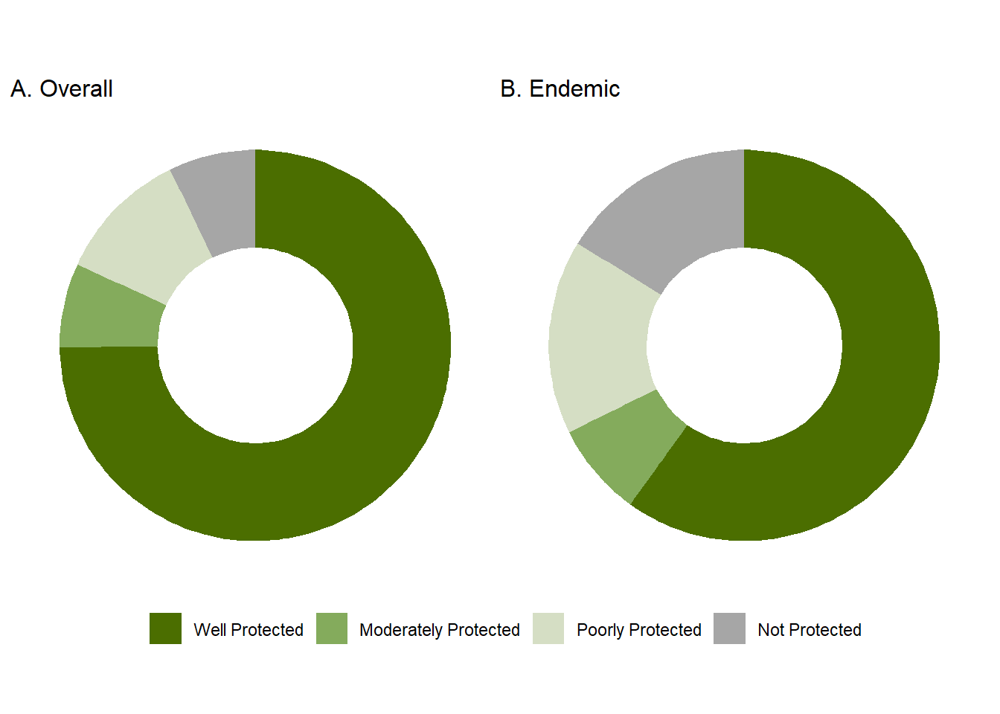

![]()

17%
taxa assessed
Threatened
taxa assessed
Threatened
70%
taxa assessed
Well Protected
taxa assessed
Well Protected
14%
taxa assessed
Not protected
taxa assessed
Not protected
Red List status and trends
South Africa’s flora shows very high levels of species diversity and endemism: 13,642 of the 20,248 taxa (67%), with high concentration in the Fynbos biome.
1 in 5 endemic taxa are threatened.
Trends in species status over time were assessed using a representative sample of 900 plant taxa, revealing an increase in extinction risks. Plants threatened with extinction increased by 2% between 2017 and 2024.
Plant taxa are experiencing a severe crisis, driven mainly by habitat loss and further intensified by invasive species, overexploitation/illegal harvesting and by the intensifying impacts of climate change.
Protected area expansion has improved plant protection.

Threat status, trends and pressures
- Threat status
South Africa has assessed the threat status of 20,248 indigenous plant species using the IUCN Red List of Threatened Species categories and criteria, which reflect a species’ risk of extinction. The Red List includes several extinct categories, three threatened categories - Critically Endangered (CR), Endangered (EN), and Vulnerable (VU) - as well as categories for Near Threatened (NT), Data Deficient (DD), and Least Concern (LC). South Africa augments the IUCN system by adding a category for rarity (Rare), defined as range- restricted endemic species with a global extent of occurrence of less than 500 km² that occur in areas with no significant anthropogenic pressures. Rare species are prioritized for national conservation interventions, even if they qualify as Least Concern under the IUCN system.
Among assessed taxa, 0.2% (36) are extinct or possibly extinct, and 15% (3,195) are threatened. The country also has high endemism, with 13,648 taxa (67%) found only in South Africa.
Given this exceptional diversity and high levels of threat, monitoring all species is not practical. To track trends in extinction risk and identify the pressures driving these risks, a representative sample of 900 plant taxa was used. Of the assessed sample taxa, 17% taxa are threatened with extinction (Figure 3 C).

| Taxon | CR | CR (PE) | DD | EN | EW | EX | LC | NT | Rare | VU | Total |
|---|---|---|---|---|---|---|---|---|---|---|---|
| Overall plants | 538 | 71 | 1367 | 1027 | 8 | 28 | 13732 | 600 | 1318 | 1559 | 20248 |
| Overall endemic plants | 476 | 70 | 1272 | 969 | 7 | 28 | 7542 | 540 | 1270 | 1474 | 13648 |
| Sample endemic plants* | 20 | 3 | 49 | 47 | 0 | 0 | 587 | 67 | 44 | 83 | 900 |
| Sample plants* | 16 | 3 | 38 | 43 | 0 | 0 | 310 | 60 | 44 | 74 | 588 |
- Trends (RLI)
The trend in species status over time was measured using the globally recognised indicator, the IUCN Red List Index of species (RLIs). The RLIs is calculated for specific taxonomic groups based on genuine changes in Red List categories over time. The RLIs value ranges from 0 to 1, and the lower the value, the faster the taxonomic group is heading towards extinction – i.e. if the value is 1, all taxa are Least Concern and if the value is 0, all taxa are extinct. The Red List Index of plants is calculated using a sample of 900 plant taxa.
An increase in extinction risk is evident for plant taxa occurring in the Desert and Succulent Karoo biomes (Figure 4). Rising threat levels for plants have largely been driven by climate change and habitat loss caused by mining and renewable energy developments. Most of the plants that have been uplisted due to increasing extinction risk are found in the Northern Cape. The province has been severely affected by drought over the past decade and continues to face pressure from mining and renewable energy developments.


NoteBox 1. Conservation interventions for medicinal plants reversing extinction risk trends (Warbrugia salutaris)
A pioneering conservation model developed in the Kruger National Park and spread to other parts of South Africa, has successfully resulted in the highly popular medicinal plant the pepper bark tree being downlisted from Endangered to Vulnerable. The conservation intervention that supplies traditional healers with cultivated plants to grow in home gardens, has reduced pressure on wild populations while ensuring continued access to culturally important resources. The intervention has slowed and reversed the species’ decline, leading to a genuine improvement in its Red List status. Building on this success, the model is now being expanded to other medicinal plant species, offering a replicable blueprint for balancing cultural practices with biodiversity conservation. https://redlist.sanbi.org/species.php?species=925-2


- Pressures
Species in terrestrial ecosystems face pressures from habitat loss, invasive alien species, pollution, resource use, and climate change. Habitat loss is the single biggest cause of biodiversity decline, mainly from conversion of natural vegetation for croplands, mining, plantations, settlements, and infrastructure. Habitat fragmentation further affects ecological functioning and the viability of species, especially under climate change and biological invasions.
The increasing extinction risk for plant taxa is a result of multiple pressures, with a shift in the most significant drivers. Previously, the primary threats were identified as competition from invasive plant species, crop cultivation, urban development, and livestock overgrazing However, recent analysis highlights a growing influence of climate change and habitat loss due to mining and renewable energy developments. This trend is particularly evident in the Northern Cape province, where most plants that have been uplisted due to increasing extinction risk. The province was severely impacted by drought over the past decade and continues to face pressure from mining and renewable energy developments.
NoteBox 2. llegal trade in succulent plants
Since 2019, a total of 878 South Africa succulent, caudiform and geophytic plant species have been illegally removed from the wild as part of a growing trade in ornamental plants facilitated through online trade platforms such as EBay, Facebook and Instagram. SANBI and the Department of Environment, Forestry and Fisheries are co-ordinating the implementation of the National Response Strategy and Action Plant to address the illegal trade in succulent plants

Protection level
Main findings
Plants were assessed using a representative sample of 900 taxa. Peripheral taxa with less than 5% of their distribution in South Africa were excluded from the analysis. Protection levels were calculated for this sample to track changes in extinction risk over time. The effectiveness of protected areas in mitigating threats to species within their boundaries has also revealed some interesting case studies.

Further analysis and main findings can be found on the Assessment Summary Statistics page
Monitoring
Add text
Species recovery
Add text
NoteBox 3. Recovery work on plants
With over 3000 plants threatened with extinction, multiple interventions to address threatened species declines are required including the expansion of protected areas, the restoration of habitats that are being degraded by invasive species, and the inclusion of threatened plants in biodiversity sector plans. In addition, 293, critically endangered and endangered plants need active recovery projects to take place in order toensure that they do not go extinct in the next decade. Between 2020 and 2023 the South African National Biodiversity Institute has run a process to prioritise plants in urgent need of recovery using the IUCN Red List categories and criteria to select those in most urgent need of recovery. A species recovery working group with conservation agencies and indigenous plant growers has been established and each stakeholder has been allocated a handful of species to implement recovery work on. A major upscaling of resources to support species recovery is required as only 14 of the 293 species that require recovery have active recovery projects being implemented. If you would like to financially support the recovery of a critically endangered plant species from extinction please email. i.Ebrahim@sanbi.org.za
.png)
Knowledge gaps
Add text
References
1. South African Biodiversity Institute. 2024. Statistics: Red List of South African Plants. Available at: http://Redlist.sanbi.org. Accessed August 27, 2025.